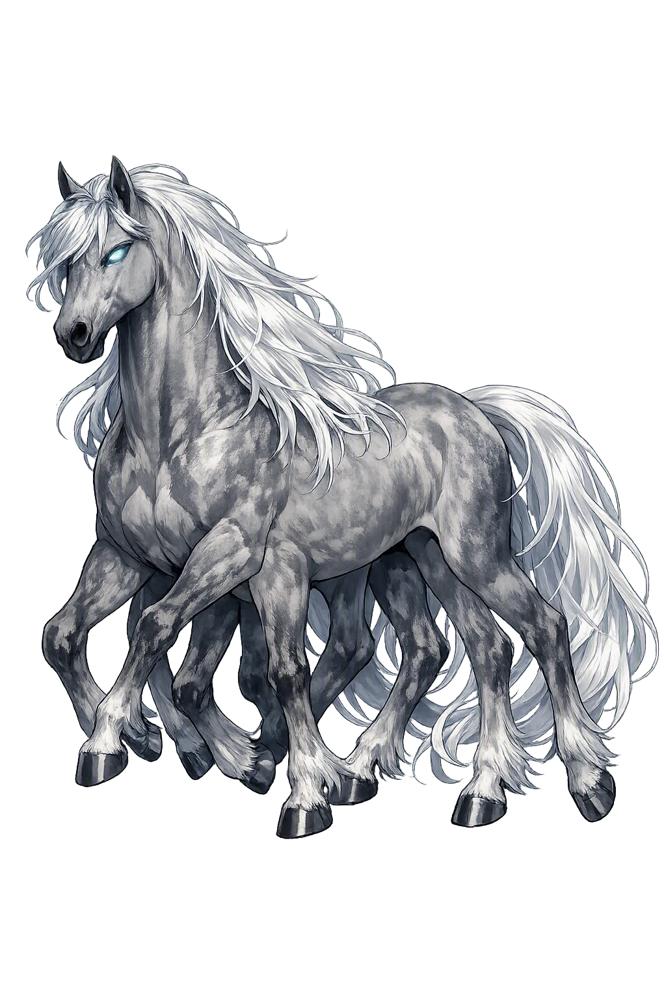
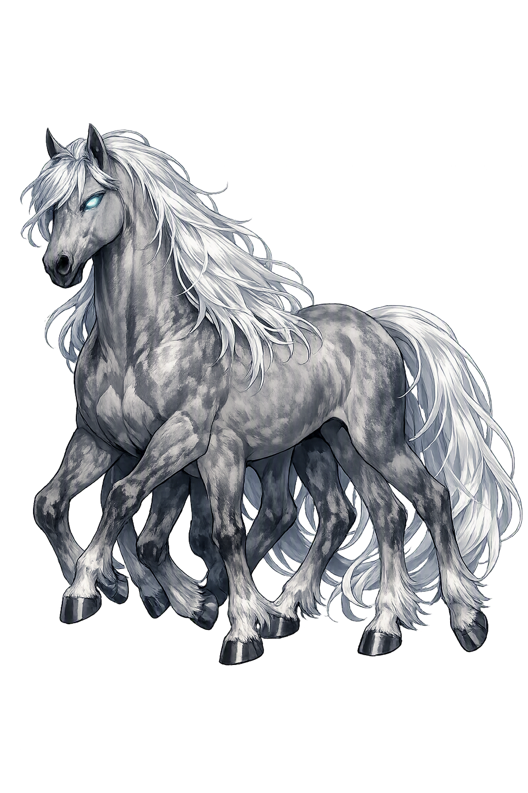

The Authentic Orthography
Eight-Legged Steed, Journey, Offspring of Loki · Gliding one (from sleipr, slippery)

Unicode restoration and ASCII comparison
ᛋᛚᛅᛁᛒᚾᛁᛦ
The name in its original Norse form. Sleipnir (ᛋᛚᛅᛁᛒᚾᛁᛦ) is attested in the source tradition — “Gliding one (from sleipr, slippery)”. Its original diacritics and script distinctions carry the full phonetic and orthographic weight of the source tradition.
sleipnir
The plain sleipnir form is identical to the Unicode restoration. Because this name is already written in Latin letters, no diacritics, stress, or script information were lost — only capitalization differs.
Sleipnir
The Unicode restoration does not need to recover lost marks for Sleipnir. Its value is canonical spelling and consistent cataloguing, not the reconstruction of erased orthography. The domain is readable as-is to both DNS and humanity.
Sleipnir.com → sleipnir.com
The non-ASCII characters in Sleipnir are encoded while the ASCII remains visible. To the DNS, it is Punycode. To humanity, it is Sleipnir.
How Sleipnir travels from ancient script to the modern URL
Owned, ideal, and ASCII forms of Sleipnir
Sleipnir
Restores ᛋᛚᛅᛁᛒᚾᛁᛦ. The full Unicode restoration. sleipnir.com is not in the PuniCodex collection — it is watched for release; if it drops, this temple upgrades to an owned flagship.
How Sleipnir was spoken
The Gliding One Who Rides All Roads
Sleipnir, the grey eight-legged horse of Óðinn, is the best of horses among gods and men — and the strangest birth in the Edda. When the gods broke their bargain with the master builder of Ásgarðr's wall, it was Loki, in mare's shape, who lured away the giant's stallion Svaðilfari; and it was Loki who later bore the foal, grey, with eight legs. On Sleipnir's back Hermóðr rides nine nights down the Hel-road to ransom Baldr, and the horse leaps the gate of the dead with room to spare. His name means the gliding one — the creature for whom every boundary becomes a road.
The mark no retelling can omit: eight legs where every honest horse has four — the body that outruns every other mount in the nine worlds, carved already on the Gotland picture stones.
Born of Loki in mare's form and the giant's stallion Svaðilfari, after the night that broke the wall-builder's bargain — the only one of Loki's monstrous children who serves the gods instead of threatening them.
The nine-night ride: Hermóðr borrows Sleipnir to ransom Baldr, crosses the gold-roofed Gjallarbrú, and the horse leaps Hel's gate 'with so much to spare' — the road down taken at full gallop.
Sigrdrífumál remembers runes cut 'on Sleipnir's teeth' among the places where victory-runes and mind-runes were lodged — even the horse's mouth was writing's place.
Stories of Sleipnir
Sleipnir's dossier is three scenes and a pedigree: his begetting at the wall of Ásgarðr, his ride down the Hel-road for Baldr's sake, and the verse that crowns him best of horses. Around them the corpus keeps him the way the þulur keep him — catalogued, superlative, and never once ridden in vain.
A smith came to Ásgarðr offering to build the gods a wall in three seasons, high and strong against the mountain-giants — and named his wage: Freyja, and the sun and the moon. The Æsir bargained him down to one winter, alone; at Loki's urging they granted him the use of his stallion, Svaðilfari. The horse hauled boulders by night that the builder set by day, and with three days left before summer the gate-pillars stood nearly finished. The gods laid the blame on Loki, who had advised the bargain, and swore he would die an evil death unless he found a way to make the builder lose. That night, when Svaðilfari was led out to the stones, a mare ran from the wood and whinnied; the stallion broke his traces and ran after her, and the work stood still. The builder flew into a giant's rage — and the gods called on Þórr, who smashed the smith's skull with Mjölnir and sent him down to Niflhel.
Snorri closes the episode with the strangest sentence in his Edda: Loki had had such dealings with Svaðilfari that somewhat later he bore a foal. It was grey and had eight legs, and this is the best horse among gods and men. The gods' broken bargain, Loki's shame, the giant's death — and out of all of it, the greatest gift Óðinn ever received.
When Baldr lay dead and Frigg asked who would win her love by riding to Hel to ransom him, Hermóðr the Bold, Óðinn's son, stood up. Sleipnir was led out, and Hermóðr mounted and galloped away. He rode nine nights through dark and deep valleys, seeing nothing, until he came to the river Gjöll and rode onto the Gjallarbrú, the bridge roofed with shining gold, where the maiden Móðguðr guards the crossing. She told him the dead had passed that way the day before — five companies of them — and that the road to Hel lay downward and northward. He rode on to the gates of Hel, and there Sleipnir showed what eight legs are for: Hermóðr spurred him, and the horse leapt the gate with so much to spare that the leap itself became proverb.
Inside, Hermóðr found Baldr in the high seat and Nanna beside him, and delivered the Æsir's plea. Hel set her famous condition — all things in the world, living and lifeless, must weep Baldr out — and the errand failed at the giantess Þökk's dry tears. But the ride succeeded: the only journey in the corpus that goes down the Hel-road and comes back, made on the back of Loki's foal.
The Poetic Edda gives Sleipnir no scene of his own, but it gives him the superlative. Grímnismál, in its catalogue of the best of all things — Yggdrasill of trees, Skíðblaðnir of ships, Óðinn of the Æsir — names Sleipnir the best of horses, one item in a list where every other entry is a god or a wonder. Sigrdrífumál lodges him in the rune-lore: among the places where runes were carved — on the shield before the shining god, on Arvakr's ear and Alsvinnr's hoof, on Bragi's tongue — the poem counts Sleipnir's teeth, the horse's mouth itself a place of writing.
And the heroic cycle keeps his bloodline. Reginsmál's prose tells that Grani, Sigurðr's peerless grey, was of Sleipnir's lineage — the best horse of the heroic age descended from the best horse of the gods, the line running down from Óðinn's stable into the Völsung story.
Centuries before Snorri wrote, the image was already carved. On the Gotland picture stones of the eighth and ninth centuries — most famously the Tjängvide stone from Alskog and Ardre VIII — an eight-legged horse bears a rider toward a figure, often a woman with a drinking-horn, waiting before a hall. The standard reading sees Óðinn carried by Sleipnir, received at the boundary of the otherworld: the myth in granite, older than any manuscript that tells it.
The stones cannot be made to recite the Edda, and the identification rests on the one feature that needs no caption — eight legs, where nature and every other carved horse keep four. Whatever else the carvers meant, they meant a horse that runs between worlds; no other beast in the North was ever given the extra limbs.
Sleipnir is the Edda's quiet answer to the question of what Loki costs the gods. His other children are the wolf that eats the sun's lord, the serpent that girdles the world, and the daughter who keeps the dead — every one a debt that comes due at Ragnarǫk. Sleipnir alone runs the other way: the same transgression, the same mare-shape shame, and the foal is given to Óðinn and spends his strength on errands of rescue. He is the proof that in this mythology nothing is only what it cost — not the broken oath, not the trickster's punishment, not the giant's death. The wall was never finished; the horse was. And the name says what he is for: the gliding one, the creature on whose back a wall, a river, a gate of the dead are all one thing — ground. When the Æsir needed a road to the one place that has no road, they did not build one. They mounted the child of their own worst bargain, and he leapt.
Enter Extended Lore